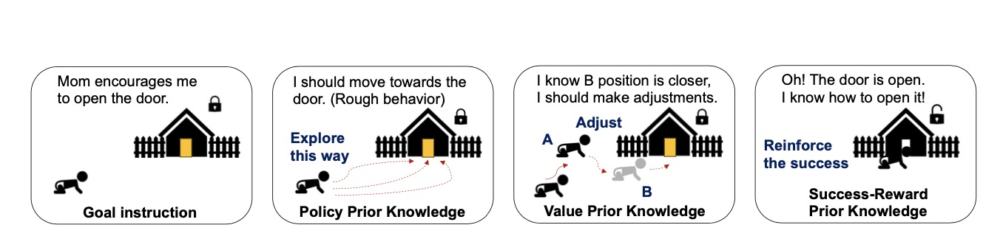
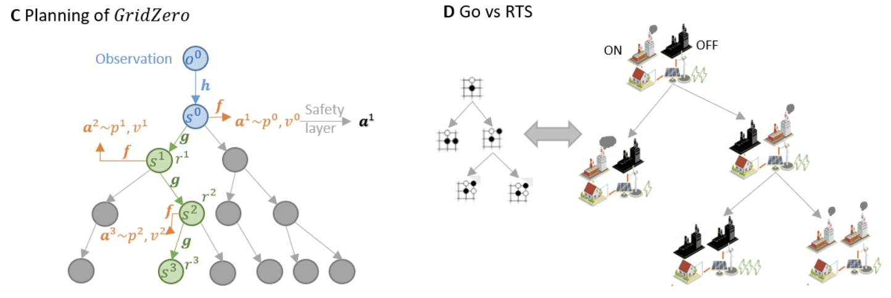

About Me
I am a Ph.D student in Institute for Interdisciplinary Information Science (IIIS) at Tsinghua University, advised by Prof. Yang Gao. I received my bachelor degree from the School of Software in Tsinghua University, under the supervision of Prof. Mingsheng Long and Prof. Feng Xu .
My interest lies in sample efficient policy learning, include Model-based RL, large models for decision-making, and robot learning etc.
Publications
EfficientZero V2: Mastering Discrete and
Continuous Control with Limited Data
Shengjie Wang*, Shaohuai Liu*, Weirui Ye*, Jiacheng You, Yang Gao
arXiv preprint 2024
[Arxiv]

Foundation Reinforcement Learning: towards Embodied
Generalist Agents with Foundation Prior Assistance
Weirui Ye, Yunsheng Zhang, Mengchen Wang, Shengjie Wang, Xianfan Gu,
Pieter Abbeel, Yang Gao
arXiv preprint 2023
[Arxiv]
[Website]
